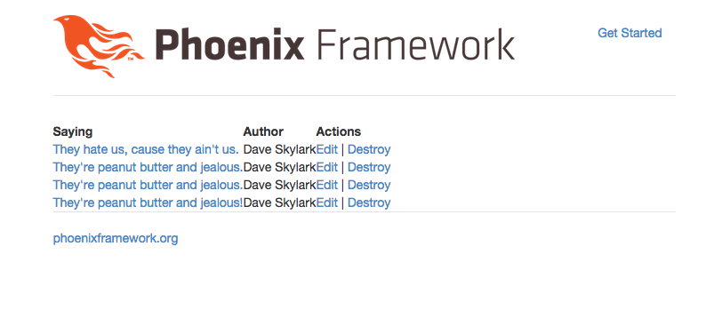

Now let's allow users to destroy quotes from the index page.
We'll want to trigger a DELETE HTTP request to the quote_path. Unfortunately, right now Phoenix doesn't support links to GET requests out of the box. Let's pull in a JavaScript plugin to do this.
The RestfulizerJs library will support this for us. To start with copy the jquery.restfulizer.js file into priv/static/js folder.
Next, let's pull in both jQuery and the RESTfulizer into our application in the web/templates/layout/application.html.eex file. This file is like application.html.erb in rails.
Add the following two lines into the head of the file:
<script src="https://code.jquery.com/jquery-1.11.2.min.js"></script>
<script src="/js/jquery.restfulizer.js"></script>
We'll also need to add a bit of JavaScript to activate the plugin, and also play nicely with CSRF tokens. Add the following script tag to the application.html.eex file:
<script>
$(function() {
$(".rest").click(function(d) {
$('form').submit(function(s) {
var input = $("<input>")
.attr("type", "hidden")
.attr("name", "csrf_token").val("<%= csrf_token(@conn) %>");
$(s.target).append($(input));
});
});
$(".rest").restfulizer({});
});
</script>Save the file. Sweet, now we've got the ability to do POST/PUT and DELETE from links.
Open up web/templates/quote/index.eex and add a button to delete the quote:
<table>
<thead>
<tr>
<th>Saying</th>
<th>Author</th>
<th>Actions</th>
</thead>
<%= for q <- @quotes do %>
<tr>
<td>
<a href="<%=quote_path(@conn, :show, q.id) %>">
<%= q.saying %>
</a>
</td>
<td>
<%= q.author %>
</td>
<td>
<a href="<%=quote_path(@conn, :edit, q.id) %>">
Edit
</a>
|
<a href="<%= quote_path(@conn, :destroy, q.id) %>" data-method="DELETE" class="rest">
Destroy
</a>
</td>
</tr>
<% end %>
</table>
Save the file. Refresh the index page.
You should notice a destroy link got added. Sweet!
Press the destroy button and you'll notice the error message that indicates that we haven't implemented the action in the controller yet. This makes sense.
Let's add the destroy action in the quotes controller. Add the method to web/controllers/quote_controller.ex that looks like this:
defmodule Splurty.QuoteController do
use Phoenix.Controller
alias Splurty.Router
import Splurty.Router.Helpers
plug :action
def homepage(conn, _params) do
render conn, "homepage.html"
end
def index(conn, _params) do
conn
|> assign(:quotes, Repo.all(Splurty.Quote))
|> render("index.html")
end
def new(conn, _params) do
render conn, "new.html"
end
def create(conn, %{"quote" => %{"saying" => saying, "author" => author}}) do
q = %Splurty.Quote{saying: saying, author: author}
Repo.insert(q)
redirect conn, to: quote_path(conn, :index)
end
def show(conn, %{"id" => id}) do
{id, _} = Integer.parse(id)
conn
|> assign(:quote, Repo.get(Splurty.Quote, id))
|> render("show.html")
end
def edit(conn, %{"id" => id}) do
{id, _} = Integer.parse(id)
conn
|> assign(:quote, Repo.get(Splurty.Quote, id))
|> render("edit.html")
end
def update(conn, %{"id" => id, "quote" => %{"saying" => saying, "author" => author}}) do
{id, _} = Integer.parse(id)
q = Repo.get(Splurty.Quote, id)
q = %{q | saying: saying, author: author }
Repo.update(q)
redirect conn, to: quote_path(conn, :show, q.id)
end
def destroy(conn, %{"id" => id}) do
{id, _} = Integer.parse(id)
q = Repo.get(Splurty.Quote, id)
Repo.delete(q)
redirect conn, to: quote_path(conn, :index)
end
end
Save the file.
Press the destroy button. Sweet, it removes the quote from our database and redirects you back to the index page.
You should see something that looks like this when you go to your index page:
